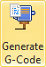
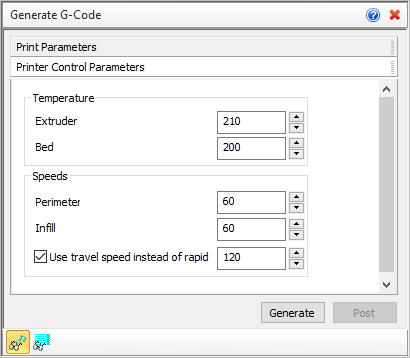

If you do not have a 3D printer attached to your computer you can use this command to generate a G-Code file that you can send to your printer from another computer or location. For example, if you use a 3D printing service, you can send them the G-Code file created by this command. It will contain all of the information needed to print your part.
 Check your 3D Printer Selection: Before generating G-Code it's a good idea to check and make sure you have the correct 3D Printer selected and that the Nozzle Diameter parameter matches the actual nozzle installed on your printer. See Select Printer for more information. Check your 3D Printer Selection: Before generating G-Code it's a good idea to check and make sure you have the correct 3D Printer selected and that the Nozzle Diameter parameter matches the actual nozzle installed on your printer. See Select Printer for more information.
|
1.First use the Fit, Part Orientation and Support Generation commands to prepare your mesh geometry for printing. 2.Select the Print Parameters tab of the dialog and set your desired parameters. 3.Set desired values on the Printer Control Parameters tab. 4.Pick Generate and the printer paths will be generated and displayed on your part. 5.Pick Post to save the G-Code file (file_name.gcode). 6.Send this file to your printer or service bureau. |
1.Select a mesh which you want to print. 2.Select parameters to generate G-Code for 3D printer. |
|
Screen Pick
|
Optional Information
|
Step 1
|
Select Generate G-Code from the 3D Print Tab.
|
Steps 1 & 2 can be performed in reverse order. You can select a mesh first and then select the command icon.
|
Step 2
|
Select the mesh you want to print.You can pick from the graphics window or from the Browser.
|
Step 3
|
Choose the desired parameters and options.
|
See below.
|
Step 4
|
Pick Generate to display the printed layer on the screen.
|
Preview the printed layers on your part using the Display Path levels icon.
|
Step 5
|
Pick Post to display the Post & Save As dialog to save your G-Code file.
|
-
|
|
The following options and reference information are available from the Browser.
Layer height
This specifies the height of each 3D printed layer. This value will depend on the material used. Refer to your printer guide or service for recommended values.
Perimeters
Each layer will consist of an outer perimeter and possibly an inner perimeter depending on the geometry of your part. This value specifies the solid thickness of each perimeter.
Retract only between levels
Check this box to only retract the extruder after an entire layer is printed. If unchecked, enter the distance between retractions.
Automatically calculate extrusion volume
Check this box to have the extrusion volume calculated automatically based on the Nozzle Diameter of the selected 3D Printer. Refer to the cross-section figure below. Width is equal to 1.05 times the Nozzle Diameter while Height is equal to the Layer Height parameter listed above. If this is unchecked, enter the Material multiplier and Spacing listed below.
Material multiplier
This value that defines the volume of material extruded per unit of distance. This multiplied by the distance traversed by the head will give you the total volume extruded during each move of the extruder head.
Spacing
This refers to the stepover distance of the extruder head in filled areas.
|
Top / Bottom
You can instruct the printer to solid fill the top and bottom layers of your part. Enter the total number of solid layers to fill.
|
Density
Enter the fill density between the perimeters of each layer. 100 would be a solid fill.
Fill angle
If Density is set to less than 100, enter the angle for the fill pattern between perimeters measured from the X axis of the printer.
Top/bottom fill pattern
If Top and Bottom (see Solid Layers above) are specified, select either Hatch or Cross Hatch as the fill pattern.
Middle file pattern
Select either Hatch or Cross Hatch for the fill pattern for all layers between the Top and Bottom layers (see Solid Layers above).
|
|
 Printer Control Parameters tab
Extruder / Bed
You can specify the operating temperature for both the extruder and the bed of the printer. This will depend on the material used. Refer to your printer guide or service for recommended values.
|
Perimeter / Infill
You can specify separately the speed of the extruder when printing Perimeters, Infills and Traversals. Speed values are measured in part units per minute.
Use travel speed instead of rapid
You can specify separately the speed of the extruder when the printer traverses. Speed values are measured in part units per minute.
|
|
Generate
Select this button to Generate the printed layers and display them on your part in the graphics screen.
Post
Select this button to Post the generated printed layers to a G-Code file. From the Post & Save As dialog, select a folder and enter a file name and file extension for the posted gcode file and pick Post. Enter a file extension supported by your printer.
Path Visibility
 Select this icon to toggle the display of the printed layers on your part in the graphics screen. Select this icon to toggle the display of the printed layers on your part in the graphics screen.
Display Path Levels
Select this icon to display the Z Level Display dialog. You can use this dialog to view each printed layer individually.
|
|